In this blog post I will explain why it makes sense to think about causal explanations when we see correlation, why correlation does not always imply causation, and which alternative causal models to consider when you are trying to figure out why two variables in your data are correlated. The blog post is intended as a non-technical introduction. I use only words and pictures to explain all concepts and logic, and I use a hypothetical example from health psychology to illustrate. The post should be relevant to anyone who is interested in using data to understand causal mechanisms.
Most who have studied or worked in science will have heard the warning phrase “correlation does not imply causation”. The warning is usually accompanied by striking examples like the correlation between ice cream sales and drowning deaths through the calendar year, as shown below:
Drowning will not lead you to eat more ice cream (quite the opposite in fact!), and it is highly unlikely that eating more ice cream will dramatically increase your risk of drowning, so obviously there can be strong correlation between two variables without a direct causal relationship.
On the other hand, I can easily give examples of correlations that strongly imply causation! For example, consider the positive correlation between ice cream sales and outside temperature. Here the correlation strongly implies a causal explanation. Rising outside temperatures cause us to want ice cream more, or allow us to hang around in spaces like the beach, where ice cream is usually the snack of choice (again, probably because of the outside temperature).
Obviously, then, correlation can imply causation, but not always. When is it warranted, and when is it not? Why is it always so tempting to think about causal relations when we see a correlation, and why are we always warned not to do it? In this post I will explain why it makes sense to look for causal relations in correlations, why it is harder to do than it might seem (giving rise to the aforementioned warning), and how a little counterfactual thinking can help us make better inferences about what correlation actually implies.
Suppose you are looking at data from a survey about people’s physical and mental health. You notice that people who report exercising more frequently also tend to report a more positive mood and outlook on life. In other words, the amount of physical exercise is positively correlated with mood. For simplicity, let us assume that you have collected a lot of data, so you are very confident that this correlation is “real” (i.e. it reflects a pattern not just in your sample, but in the whole population you have sampled from).
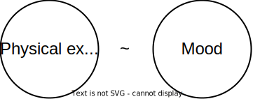
It is tempting to infer from this that physical exercise leads to a better mood. Seasoned scientists will often scold students, journalists and other fellow humans for jumping to such a conclusion. “Correlation does not equal causation!” they warn. This might lead to the impression that all inferences about causation from correlation are somehow wrong or illogical. But that is too harsh. Using correlation data for causal inference is, in principle, a perfectly logical thing to do.
To see why, flip the problem around and consider what causation implies. If physical exercise causes changes in mood then a person’s mood will vary in tune with their exercise regime. People who exercise a lot will also report being in a good mood because more exercise leads to better mood. People who do not exercise will report a being in a worse mood because they are not benefiting from the mood-boosting effects of exercise. When we look at a collection of people who vary in how much they exercise, we should therefore expect exercise scores to correlate with reported mood.
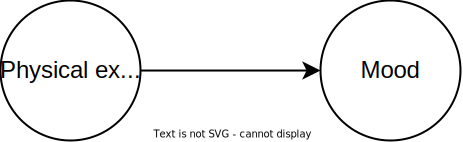
Conversely, if physical exercise and mood had been completely causally independent, we would not expect any correlation between these variables in the data. If physical exercise and mood are completely independent, a person can be in any sort of mood regardless of how much or little they work out. However, there is a correlation in the data, so this hypothesis cannot be right.
In other words, causation implies correlation. If we see correlation, we have good reason to favor the hypothesis “exercise causes mood” over the hypothesis “exercise and mood are completely independent”. One hypothesis implies correlation and the other does not. I believe most people understand this intuitively, which is probably what makes us so motivated to jump from correlation to causation in the first place.
However, while inferring causation from correlation is possible, it can be very very hard. Why? Because many different causal relations can lead to the same correlation. There are several ways to connect exercise frequency and mood with causal arrows, and many of these causal relationships imply the same correlation. We cannot simply conclude that exercise must be causing mood improvements. There can be many reasons why exercise frequency and mood are correlated in our data.
Causation implies correlation, but correlation does not necessarily imply your favored causal relation, or even any direct causal relation.
If physical exercise causes improved mood, the two will correlate. But the same logic holds in both directions. Is it possible that being in a good mood makes you more likely to go work out? If so, the following causal theory could also be true:
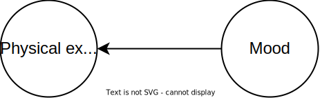
This is called the directionality problem. The problem is that the hypotheses “exercise causes mood” and “mood causes exercise” imply the exact same correlation. Without any further information, we are left with two different causal theories which are equally likely given the correlation we see in our data. We would need some additional information, such as the timing of events, or data from an experiment, to separate between them. It is sometimes also possible that both theories are true! Exercise could put you in a better mood and being in a better mood could make you more inclined to go exercise:
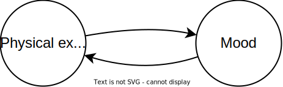
Such feedback relations often lead to complex and weird relations between variables, which I will not get into here. Weirdness aside, feedback relationships do tend to make the variables involved correlated, which means we are left with three possible causal theories.
Is it possible for two variables to be correlated even if there is no direct causal relationship between them? Unfortunately, yes. This is what the ice-cream-and-drowning-deaths example is meant to illustrate. Correlation without a direct causal relationship is common in observational data, and is usually a result of either confounding or selection bias.
Confounding happens when a third variable is a cause of both variables we are interested in (also called a causal fork).
For example, if you experience a lot of stress at work, maintaining your regular exercise routine can be difficult. At the same time, stress at work is no fun, and can easily put you in a bad mood. In other words, stress at work can have a negative causal effect on both how often you exercise and your self-reported mood:
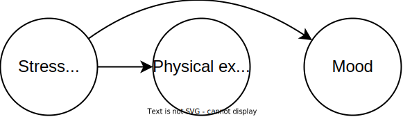
If the above theory is true, people in our data who experience a lot of stress at work will tend to both be exercising less and be in a worse mood than people in our data who experience little stress at work.
Uh-oh! This means that exercise and mood will be correlated in the data, even if there is no direct relationship between them! Stress at work - a lurking third variable - is simply “pushing” on both mood and exercise frequency at once, causing them to fluctuate up and down in tandem (a.k.a. correlate). This is what we mean when we say that stress confounds the relationship between exercise and mood, and why confounding is also known as third variable problems.
In the ice-cream-and-drowning-deaths example, weather conditions is a likely third variable causing an increase in both ice cream sales and number of deaths by drowning.
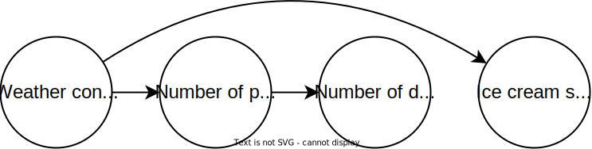
Another way two variables can become correlated without any direct causal link is through selection bias. Selection happens when the variables we are interested in both cause a third variable, and that third variable determines who ends up in our dataset (also referred to as conditioning on a collider). Left alone, collider structures do not cause X and Y to become correlated. But things change if we start selecting data points based on the shared outcome variable.
For example, suppose that that people’s desire to participate in our exercise/mood survey is influenced both by their mood and by how much they exercise:
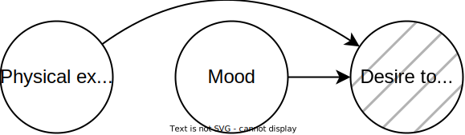
“Desire to participate in survey” is marked with dashed lines in the figure to indicate that it is a selection variable for the survey. It is some property of the participants that influences how likely they are to end up being studied.
In the example above, exercise and mood ends up being correlated in the survey data, even though they are completely unrelated to each other. Here is why:
People who exercise often will only say yes to participating if they are in a really good mood. Conversely, people who are in a bad mood may say yes to participating, but only if they exercise rarely. Frequent gym-goers in a bad mood will never participate. This means that, in our data, people who report going to the gym often will tend to be happy. If they were not happy, they would not have agreed to participate (frequent gym-goers in a bad mood will never participate!). So exercise and mood ends up being correlated in the data because they both cause a third variable that is being selected on. This is what is meant by selection bias. The scatterplot below illustrates what happens in the data.
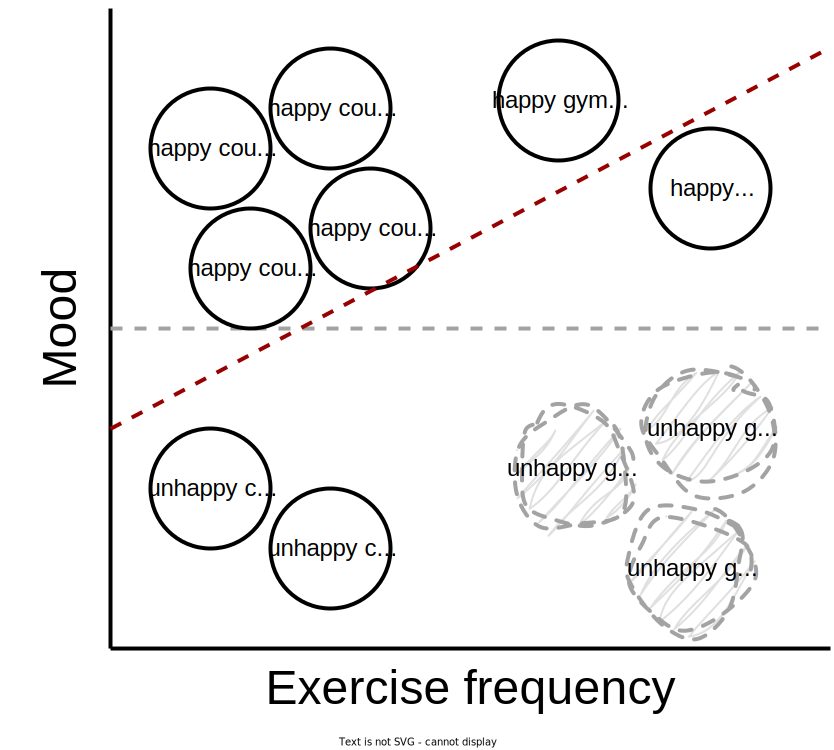
Each solid black circle represents a person that took our survey. Some exercise regularly (gym rats), some rarely (couch potatoes). Some are happy, and some are unhappy. Most are happy couch potatoes, since these are the most likely to answer. The gray dashed circles represent the unhappy gym rats that didn’t want to participate. See the problem? If we fit a regression line to the data we actually have, it clearly indicates a positive correlation between exercise frequency and mood (red dashed line). But it is a complete fluke! It only looks like correlation because we are selectively missing out on the unhappy gym rats in the population. If we had been able to recruit these, there would be no correlation between happiness and exercise frequency at all (gray dashed line).
Like with confounder variables, all variables that can cause selection bias can lead to correlation between exercise and mood. Whenever a study has a large amount of people that choose not to participate, consider whether any obvious sources of selection bias could be at play.
In summary, a correlation between two variables in survey data does suggest some underlying causal mechanism that links the two variables (directly or indirectly). But there are at least five types of causal mechanisms that could produce this correlation:
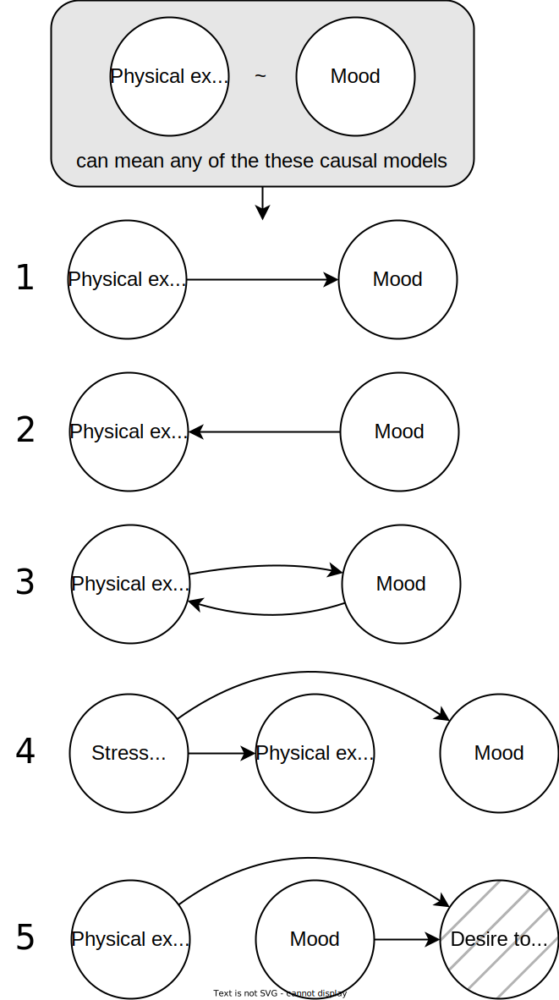
In addition, several variations of 4 and 5 are often possible since it is possible to have multiple third variables and multiple sources of selection bias. Without any further information, all causal models that lead to the same correlation are equally plausible.
Put simply, correlation indicates that something interesting might be going on, but we need to investigate further (do more research, collect more data, and utilize our expert knowledge) to figure out exactly what is going on!
Of course, it may be the case that several causal mechanisms are at play! We could have a third variable problem and a true causal effect of exercise on mood AND selection bias. The figure below shows a causal diagram in which all the hypotheses above are true:
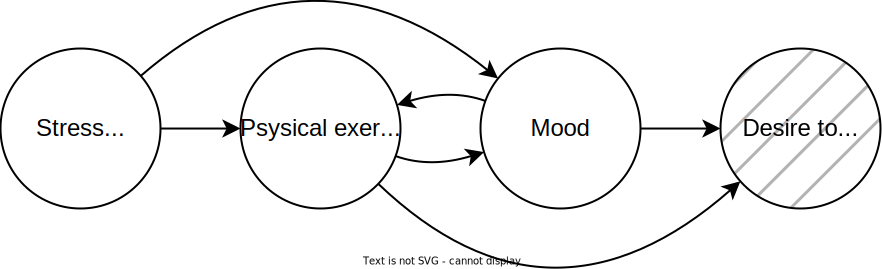
In this case, the problem is not that correlation does not equal causation. Rather, the strength of the correlation can be very different from the strength of the causal effect, because total correlation is a combination of all the mechanisms that lead to correlation. A strong raw correlation does not necessarily indicate a strong causal effect, and a weak raw correlation does not necessarily indicate a weak causal effect.
For example, if there is a very strong confounding effect of stress at work, there can be strong correlation between exercise and mood even if the causal effect of exercise on mood is tiny. On the other hand, a strong causal effect could be masked by a third variable that generates correlation in the opposite direction from the causal effect.
Causal inference is partly a game played using equal parts imagination and empirical observation. We can approach the game from two directions:
The goal of the causal inference game is essentially to imagine all causal models that could plausibly explain the data we have, and then use the scientific method to falsify all the plausible but wrong models until only the one true causal model remains. The game can be hard to play, and the aspect people seem to struggle most with is the imagining part; the realization that multiple possible causal models could explain what we are seeing, and the willingness to play around with different models of what could be true given what we know. And yet, this imagining is perhaps the most important part of the entire science of causal inference. If you cannot imagine the truth, you cannot discover it. That is why it is so important to consider alternative causal hypotheses when interpreting data, and to honestly report all plausible alternatives to our audience.
TLDR; correlation may imply causation since causation implies correlation. However correlation does not need to imply your favorite causal interpretation. To find the true explanation,
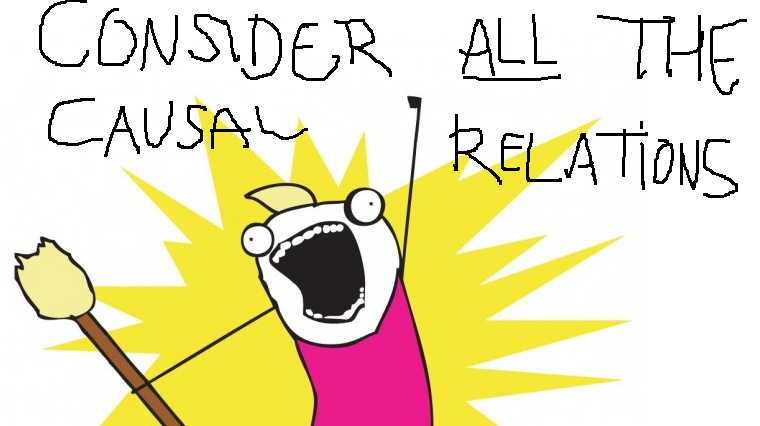
Rohrer JM. Thinking Clearly About Correlations and Causation: Graphical Causal Models for Observational Data. Advances in Methods and Practices in Psychological Science. 2018;1(1):27-42. https://doi.org/10.1177/2515245917745629
Pearl, J., & Mackenzie, D. (2019). The book of why. Penguin Books.